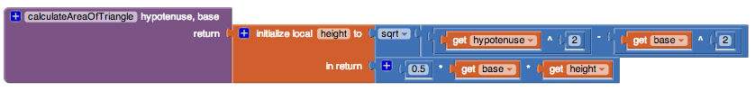

Variables can be thought of as containers that hold values. There are two types of variables that we can use: global and local variables.
Global vs Local Variables
Global Variable
A global variable is a variable that can be accessed in multiple scopes. This means that wherever you are in the program you can use that variable: get its current value or set its value to something else. Global variables are created using the initialize global name to block found in the Variables drawer.
Local Variable
A local variable is a variable that is declared within a function or it is an argument passed into a function. This means that you can only access these variables in that specific function where they are declared or passed in as an argument.
Local variables are created when:
- arguments are passed in to a procedure or event
- using the initialize local name to block
- using a for range or for each block (these for loops will create a local variable for the letter i
Variables Overview
The Variables drawer provides blocks to create, get, and set both global and local variables. Explanations of all of the blocks available in this drawer can be found on the Variables page.
Global Variable Example
Take out a get block and click the dropdown. There will be no variables to select. Create a global variable and name it count and initialize it to 0. Click on the dropdown of the get block. You can now see count available to choose. Once you have created a global variable, it will always be available in the dropdown of get .
Local Variable Example
Create a local variable using initialize local name to in do block and name it a. Now drag out a set block and put it outside of the initialize local name to in do block. Click on the dropdown of the set block. You will not see a as a choice in the dropdown. This is because the set block is out of the scope of the local variable's domain. Move the block inside of the do part of the initialize local name to in do block. Click the dropdown of the set block. Now a is available to choose.
Variable Labels
Notice how when you use a get or set block for a global variable. The block will say global name.
When using get or set blocks for local variables, the block will only say name. Remember that local variables include variables created from arguments to procedures or event handlers, variables created for use in for loops, or initializing local variables for an expression or return statement by using the orange local variable initialize blocks.

Summary
So while inside a local variable block or a procedure that has arguments, the arguments or local variable that you named will also be available in the dropdown. But when you are not inside, they will not be available. When you select a value in the dropdown, the internal value saved to that variable will be returned and passed on to whatever block get is connected to.
Why would I ever need to use local variables?
Sometimes you may need to create a new variable within a procedure and only want that procedure to be able to use it.

In this example, we use a local variable, height, to store the height of the triangle whose hypotenuse and base we're given as arguments. We might have a different procedure that uses height as an argument so we would not be able to use a global variable. To make sure of that, we use local variables so that the height in the right context is only available in the procedure where it is used.
Sometimes it might just be easier to have local variables rather than creating many new global ones. Or it might allow us to use less blocks.
Want to experiment with global and local variables more? Check out this lesson on variable scoping here.